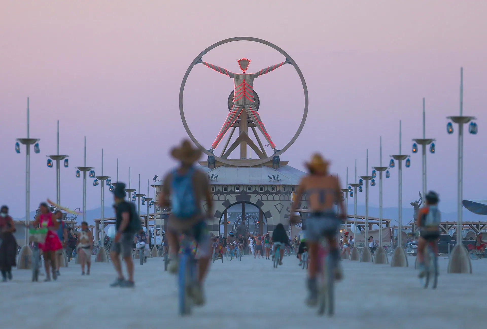

Black Rock City is located in the Black Rock Desert in Nevada, USA. It is famously known for hosting the annual Burning Man festival, a gathering that celebrates art, self-expression, and self-reliance. Every year, tens of thousands of people from around the world gather here to create a temporary city dedicated to community, art, and personal exploration.
USA
2. Activities in Black Rock City during Burning Man
There are countless activities you can do during the Burning Man festival. Here are some of the main highlights:
Participating in various art installations and interactive exhibits.
Attending workshops that focus on creativity, mindfulness, and sustainability.
Enjoying musical performances from various genres and artists.
Taking part in the traditional burning of the Man, a key event of the festival.
3. Important Things and Locations in Black Rock City
Burning Man is built on 10 guiding principles, such as radical inclusion and communal effort. Below are some important locations within Black Rock City:
The Playa
The open area where all major art installations and activities take place.
The Man
The central art piece and symbol of the festival that is burned on the last night.
Center Camp
A huge community area for socializing, workshops, and performances.
Temple
A sacred space where participants can reflect and leave messages before it is burned.
4. Photos of Black Rock City

The Man at Burning ManSky View of Black Rock CitySold City ViewAerial View of Black Rock City during Burning ManThe Temple, a central piece of Burning Man culture